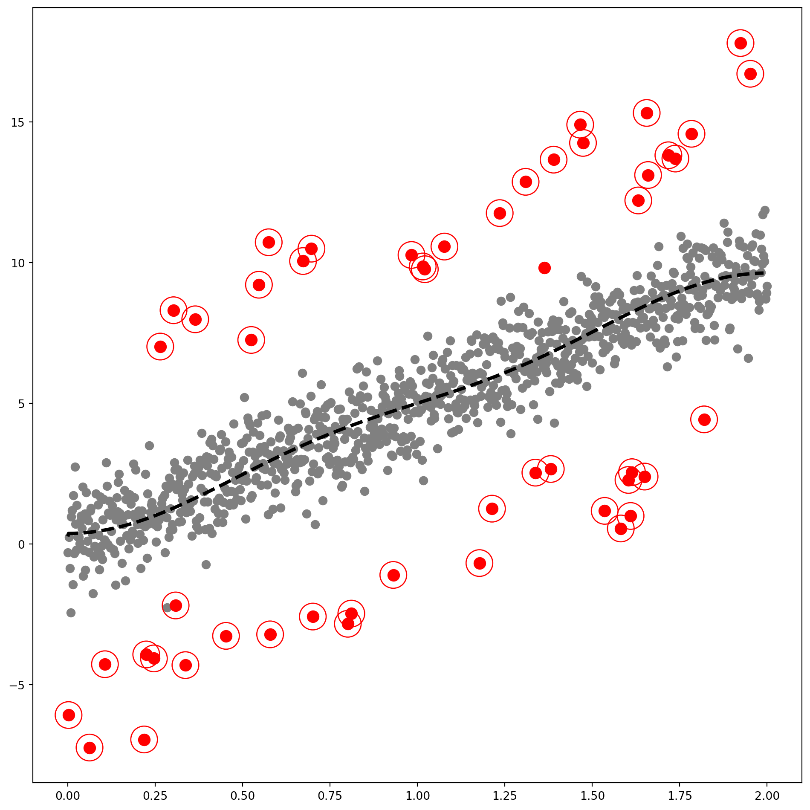
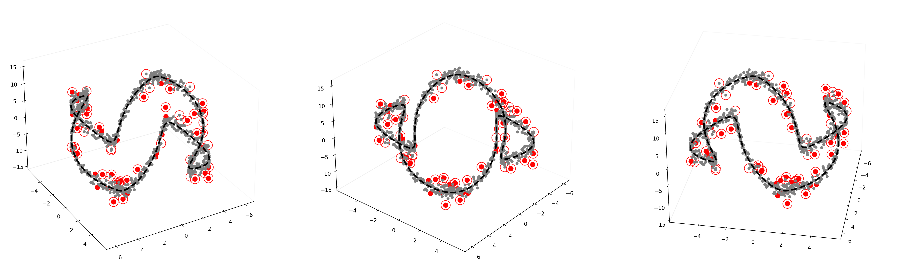

| Algorithm | Accuracy | Precision | Recall | F1 | AUC | |
|---|---|---|---|---|---|---|
| 0 | GODE | 0.999 | 1.000 | 0.980 | 0.990 | 1.000 |
| 1 | LOF (Breunig et al., 2000) | 0.991 | 0.920 | 0.902 | 0.911 | 0.998 |
| 2 | kNN (Ramaswamy et al., 2000) | 0.991 | 0.920 | 0.902 | 0.911 | 0.997 |
| 3 | CBLOF (He et al., 2003) | 0.969 | 0.700 | 0.686 | 0.693 | 0.959 |
| 4 | OCSVM (Sch ̈olkopf et al., 2001) | 0.923 | 0.370 | 0.725 | 0.490 | 0.864 |
| 5 | MCD (Hardin and Rocke, 2004) | 0.999 | 1.000 | 0.980 | 0.990 | 1.000 |
| 6 | Feature Bagging (Lazarevic and Kumar, 2005) | 0.993 | 0.940 | 0.922 | 0.931 | 0.997 |
| 7 | ABOD (Kriegel et al., 2008) | 0.973 | 0.740 | 0.725 | 0.733 | 0.990 |
| 8 | Isolation Forest (Liu et al., 2008) | 0.987 | 0.880 | 0.863 | 0.871 | 0.996 |
| 9 | HBOS (Goldstein and Dengel, 2012) | 0.972 | 0.926 | 0.490 | 0.641 | 0.864 |
| 10 | SOS (Janssens et al., 2012) | 0.907 | 0.080 | 0.078 | 0.079 | 0.542 |
| 11 | SO-GAAL (Liu et al., 2019) | 0.946 | 0.468 | 0.431 | 0.449 | 0.575 |
| 12 | MO-GAAL (Liu et al., 2019) | 0.947 | 0.478 | 0.431 | 0.454 | 0.576 |
| 13 | LSCP (Zhao et al., 2019) | 0.985 | 0.860 | 0.843 | 0.851 | 0.999 |

| Algorithm | Accuracy | Precision | Recall | F1 | AUC | |
|---|---|---|---|---|---|---|
| 0 | GODE | 0.961 | 0.600 | 0.612 | 0.606 | 0.893 |
| 1 | LOF (Breunig et al., 2000) | 0.921 | 0.200 | 0.204 | 0.202 | 0.664 |
| 2 | kNN (Ramaswamy et al., 2000) | 0.947 | 0.460 | 0.469 | 0.465 | 0.848 |
| 3 | CBLOF (He et al., 2003) | 0.911 | 0.100 | 0.102 | 0.101 | 0.533 |
| 4 | OCSVM (Sch ̈olkopf et al., 2001) | 0.893 | 0.210 | 0.429 | 0.282 | 0.789 |
| 5 | MCD (Hardin and Rocke, 2004) | 0.911 | 0.100 | 0.102 | 0.101 | 0.454 |
| 6 | Feature Bagging (Lazarevic and Kumar, 2005) | 0.921 | 0.200 | 0.204 | 0.202 | 0.678 |
| 7 | ABOD (Kriegel et al., 2008) | 0.951 | 0.500 | 0.510 | 0.505 | 0.864 |
| 8 | Isolation Forest (Liu et al., 2008) | 0.925 | 0.240 | 0.245 | 0.242 | 0.618 |
| 9 | HBOS (Goldstein and Dengel, 2012) | 0.921 | 0.105 | 0.082 | 0.092 | 0.530 |
| 10 | SOS (Janssens et al., 2012) | 0.941 | 0.400 | 0.408 | 0.404 | 0.844 |
| 11 | SO-GAAL (Liu et al., 2019) | 0.951 | 0.000 | 0.000 | 0.000 | 0.464 |
| 12 | MO-GAAL (Liu et al., 2019) | 0.951 | 0.000 | 0.000 | 0.000 | 0.510 |
| 13 | LSCP (Zhao et al., 2019) | 0.947 | 0.460 | 0.469 | 0.465 | 0.849 |

| Algorithm | Accuracy | Precision | Recall | F1 | AUC | |
|---|---|---|---|---|---|---|
| 0 | GODE | 0.988 | 0.864 | 0.900 | 0.882 | 0.996 |
| 1 | LOF (Breunig et al., 2000) | 0.943 | 0.413 | 0.433 | 0.423 | 0.819 |
| 2 | kNN (Ramaswamy et al., 2000) | 0.987 | 0.849 | 0.892 | 0.870 | 0.984 |
| 3 | CBLOF (He et al., 2003) | 0.981 | 0.786 | 0.825 | 0.805 | 0.971 |
| 4 | OCSVM (Sch ̈olkopf et al., 2001) | 0.917 | 0.323 | 0.675 | 0.437 | 0.858 |
| 5 | MCD (Hardin and Rocke, 2004) | 0.978 | 0.762 | 0.800 | 0.780 | 0.972 |
| 6 | Feature Bagging (Lazarevic and Kumar, 2005) | 0.949 | 0.468 | 0.492 | 0.480 | 0.834 |
| 7 | ABOD (Kriegel et al., 2008) | 0.979 | 0.770 | 0.808 | 0.789 | 0.972 |
| 8 | Isolation Forest (Liu et al., 2008) | 0.972 | 0.698 | 0.733 | 0.715 | 0.968 |
| 9 | HBOS (Goldstein and Dengel, 2012) | 0.932 | 0.302 | 0.317 | 0.309 | 0.859 |
| 10 | SOS (Janssens et al., 2012) | 0.909 | 0.071 | 0.075 | 0.073 | 0.557 |
| 11 | SO-GAAL (Liu et al., 2019) | 0.952 | 0.000 | 0.000 | 0.000 | 0.673 |
| 12 | MO-GAAL (Liu et al., 2019) | 0.952 | 0.000 | 0.000 | 0.000 | 0.660 |
| 13 | LSCP (Zhao et al., 2019) | 0.982 | 0.802 | 0.842 | 0.821 | 0.982 |